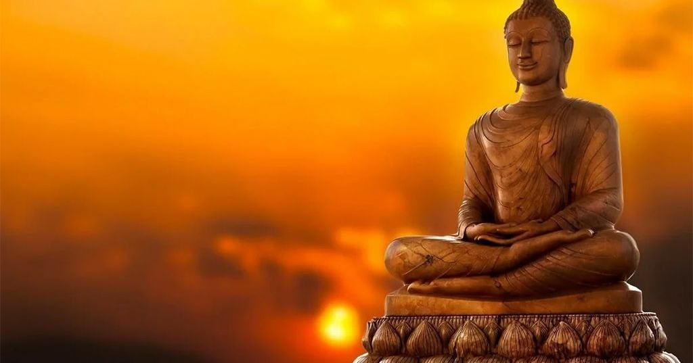

Нирвана
Нирвана - это высшее освобождение, к которому стремится человек, следующий учению Будды. Само слово означает "угасание" или "затухание", подобно тому как огонь постепенно гаснет, когда исчерпывается его топливо.

Нажмите на пламя.
Нирвана - это высшее освобождение, к которому стремится человек, следующий учению Будды. Само слово означает "угасание" или "затухание", подобно тому как огонь постепенно гаснет, когда исчерпывается его топливо. В Дхарме этим образом описывается угасание жажды, ненависти и невежества - тех состояний, которые удерживают человека в страдании и заставляют его вновь и вновь странствовать в круговороте рождений и смертей, именуемом сансарой.
Нирвана не является небесным царством, куда человек отправляется после смерти, и не является наградой за добрые поступки. Это освобождение самого ума от привязанности к желаниям, страху, ненависти и заблуждениям. Пока человек цепляется за богатство, власть, славу, людей или даже за собственное представление о себе, он остаётся связанным с непостоянным миром и неизбежно встречается с утратой и страданием. Тот, кто достигает Нирваны, видит природу вещей такой, какая она есть, и более не позволяет жажде управлять своим сердцем.
Нирвана связана с прекращением страдания и освобождением от сансары, поэтому её нельзя представить просто как "хорошую жизнь" или место вечного удовольствия. Это состояние, которое невозможно полностью описать словами тому, кто его не познал. Подобно человеку, который никогда не видел моря, невозможно объяснить ему глубину воды одними рассказами, так и Нирвану нельзя постичь одним лишь чтением священных текстов.
Учение Будды указывает путь, но пройти его каждый должен сам. Для этого человек очищает свои намерения, следит за словами и поступками, развивает сострадание, учится управлять своим умом и практикует сосредоточение. Нирвана не достигается одним великим подвигом. Она является результатом глубокого преображения человека, который постепенно освобождается от тех привязанностей, что прежде казались ему неотделимыми от самого существования.
Не следует также считать Нирвану стремлением к смерти или уничтожению. Буддийский путь не призывает человека искать конец жизни. Напротив, он учит внимательно проживать каждый день, видеть страдание, понимать его причины и освобождать ум от того, что его порождает.
Для монаха Нирвана является высшим направлением духовного пути - не богатство, не слава и не власть, а полное освобождение. В мире, где князья ведут войны, самураи ищут славы, а простые люди боятся голода и смерти, Дхарма напоминает, что всё мирское непостоянно. Замки падут, мечи заржавеют, имена могущественных людей забудутся, а цветы сакуры опадут с ветвей. Поэтому мудрец не стремится обрести вечность в вещах, которые сами обречены исчезнуть. Он стремится освободить своё сердце от цепляния за них.
Так Нирвана становится не далёкой наградой, а высшим смыслом пути - прекращением жажды, освобождением от страдания и выходом из бесконечного круговорота сансары. Путь к ней начинается не где-то далеко и не после смерти, а здесь и сейчас - с первого осознанного шага человека навстречу Дхарме.
Мир приходит изнутри. Не ищи его снаружи.Будда Шьякмуни